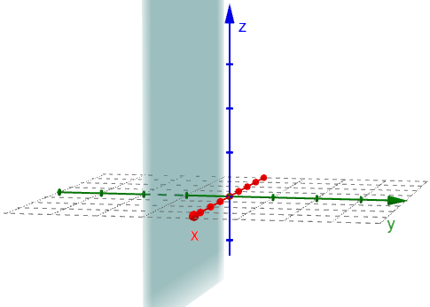

Simple Planes & Spheres
Using the GeoGebra app on the previous page, we saw three specific planes called the coordinate planes.
- The xy-plane is the set of all points where the z-coordinate is 0, which can be expressed as the set \(\{(x,y,z) \, | \, z=0 \}\) or \(z=0\).
- The xz-plane is the set of all points where the y-coordinate is 0, which can be expressed as the set \(\{(x,y,z) \, | \, y=0 \}\) or \(y=0\).
- The yz-plane is the set of all points where the x-coordinate is 0, which can be expressed as the set \(\{(x,y,z) \, | \, x=0 \}\) or \(x=0\).
These are illustrated in the following video.
Simple Planes
A simple plane is a plane that is parallel to one of the coordinate planes. So for example, the equation \(z=3\) is a simple plane parallel to the \(xy\)-plane where all the \(z\)-coordinates are 3.

Similarly, the equation \(y=-1\) is a simple plane parallel to the \(xz\)-plane where all \(y\)-coordinates are \(-1\).
Spheres
Recall that a circle with center \((a,b)\) and radius \(r\) is given by the equation \((x-a)^2 + (y-b)^2 = r^2\). If we extend this 2D shape into 3D space, we get a sphere.
A sphere of radius \(r\) and center \((a,b,c)\) is defined by the following equation.
\[(x-a)^2 + (y-b)^2 + (z-c)^2 = r^2\]The equation of the sphere illustrated below is \((x-1)^2 + (y+2)^2 + (z-3)^2 = 4\). It is centered at the point \((1,-2,3)\) and has a radius of \(2\).

The following videos demonstrate how we can write the equation of a sphere in standard form when given the equation in the more general form (using completing the square) or when simply given the center and radius.